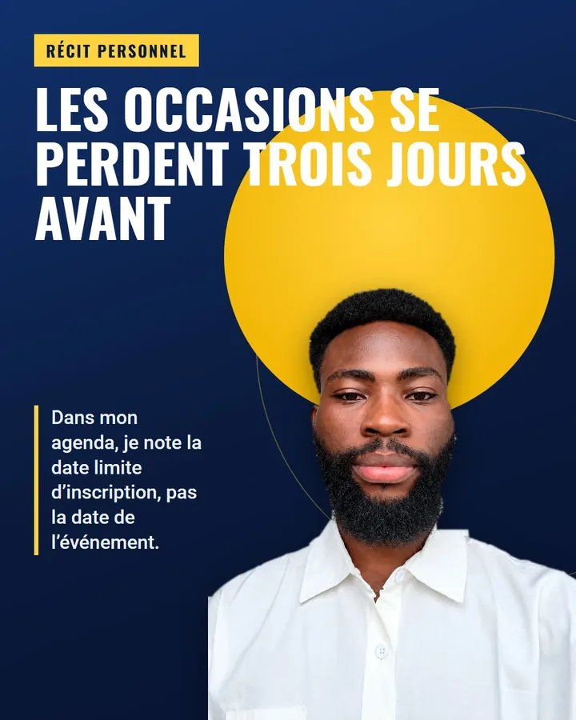

01
Média automatisé · Facebook et LinkedIn
WILACTU
Mon média, lancé en octobre 2026 : un hub d'information. Football, mais aussi politique, économie, santé, religion, finance, crypto, guerres et Afrique. Mon agent publie 8 fois par jour et traque l'actualité en continu, avec des alertes publiées seules.
8/jourpublications
200+posts publiés
9domaines surveillés
